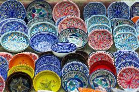

Tunisia's Vibrant Heritage
Tunisian culture is a captivating blend of Arab, Amazigh, and Mediterranean influences that create a unique identity.
- Malouf: Traditional music and poetry
- Handicrafts: Pottery, copper work, and beautiful carpets
- Traditional Clothing: Jebba and Chechia (traditional hat)
- Festivals: Colorful celebrations throughout the year

Why Visit Tunisia?
Tunisia may be small in size, but it is immense in spirit, history, and natural beauty. From pristine Mediterranean beaches to the golden Sahara Desert, and from ancient Roman ruins to modern vibrant cities, Tunisia offers an unforgettable experience for every traveler.
Welcome to Tunisia!